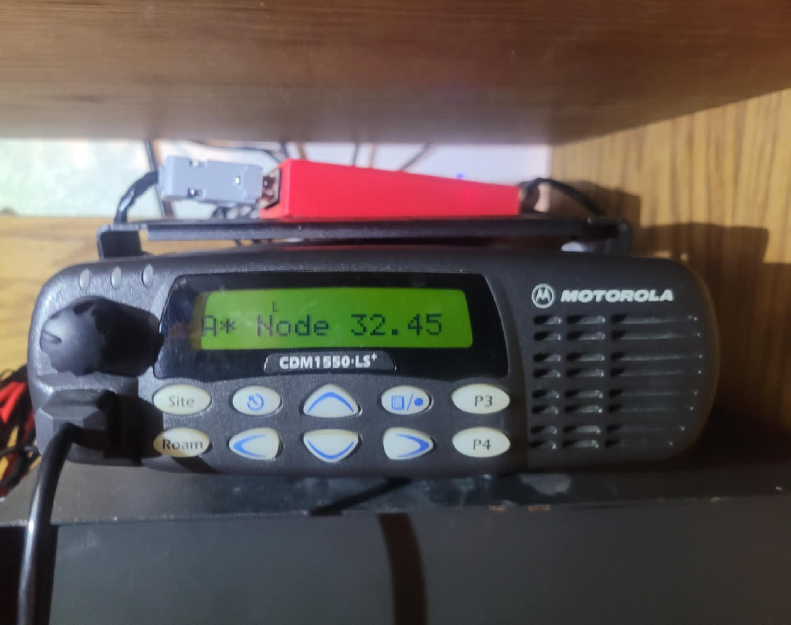

Welcome!
Hello, I am Joseph Robles KI5TLZ. I love chasing down technical projects and learning something new from them. My interests tend to center around computing, basic DC electronics, and amateur radio. This site primarily focuses on my Allstar repeater.
AllstarLink repeater | About The Repeater
One of my favorite projects that I have completed so far is my Allstar repeater. Allstar is a Radio Over Internet Protocol program that allows radios to communicate over a network, a lot like making phone calls but between different radios. Building this node was a big project and I learned a lot!
